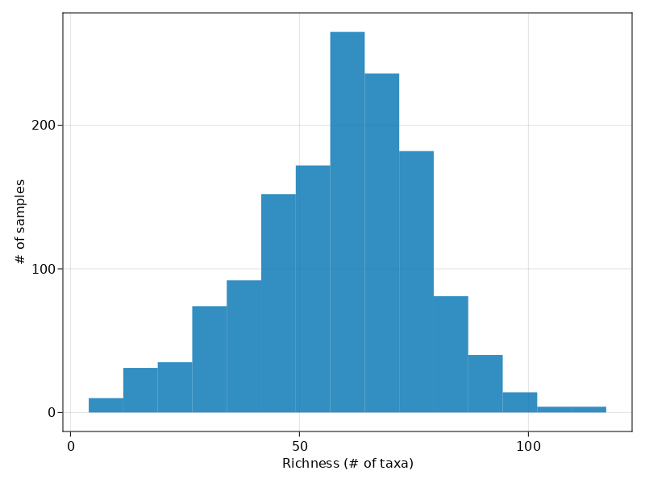
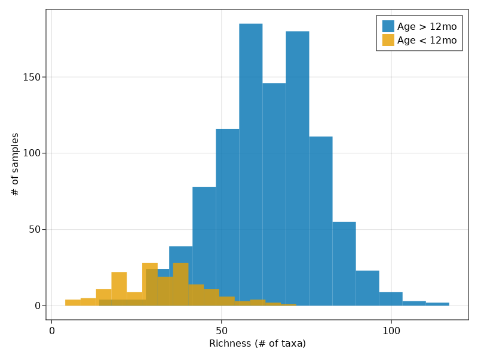

Microbiome data types and analyses
Kevin Bonham, PhD
2021-12-07
Samples and primary data
- Stool samples (~500mg) put in buffer as quickly as possible
- 2 (or 3??) collection types:
- Zymo DNA/RNA protect - proprietary buffer to stabilize nucleic acids (for sequencing)
- Ethanol - for metabolomics
- Direct freeze - for culturing
Primary Data types
- Shotgun metagenomic sequencing: FASTQ files (sequences + quality scores)
- paired-end reads, 2x150 bp
- ~10M reads / sample
- Metabolomics (LCMS)
- 4 column types that target different molecule types
- chromatograph with peaks with m/z & retention time
Derived data types
- Shotgun metagenomics
- Taxonomic profiles: “Who’s there?” - relative abundance of taxa (eg species, genera) in each sample
- Functional profiles: “What can they do?” - relative abundance of genes (some stratified by species)
- Metabolomic profiles: “What have they (and we) done?”
- relative abundance of metabolites, ~5% known
Expected taxonomic diversity

Expected taxonomic diversity - by age

Expected taxonomic diversity - by age

Expected functional diversity - by age

Table of integrated areas
Limitations
- Sparsity: most features are not in most samples, most samples don’t have most features
- Heteroskedasticity: variances of features are not uniform
- Compositionality: features sum to 1 (so all features are dependent on all others)
- High dimensionality
- hundreds to thousands in taxonomic profiles
- tens of thousands to millions of genes in functional profiles
- tens of thousands of metabolites